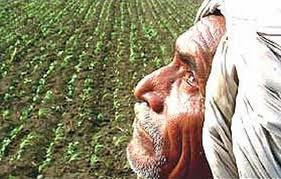

Jai jawan , Jai kisan...

the words of our late Prime Minister Shri.
Lal Bahadur Shastri cleary signify that for a prosperous country the soldiers and farmers are the foundation .To develop rural area it is very necessary to support the farming sector of our economy.
Hence we are supposed to create a database to keep a record of all farmers to help in rural development. Each farmer is given an ID .His name along with his residential address is feeded into the database .Other attributes such as educational qualifications and number of dependent family members belonging to the farmer have also been recorded for reference .The database is valid for all the rural areas of a particular state.
Every farmer has an account in a bank and he can take many loans. His account details and loan details have been kept in separate tables for reference .There may be many banks in a village and a farmer can have an account in any of them.
Every farmer can own land at one or more locations. He can also rent his land from a landlord. For the rented land, the rent_period and amount are also stored. The land is categorized by its soil type, fertility, location and the land rate at that location
Many resources like seeds, fertilizers, helpers and other tools etc. are required by the farmer. This data along with the total cost of each resource is included in a table of the database.
to store the output of the labour, season-wise data is stored for crop name, its total produce , sale price and revenue generated.
For the database to be a successful initiative for rural development, the farmer's yearly profit/loss statement is calculated by his total revenue and capital investment. His total savings and pending loan amount is also stored as his financial status.